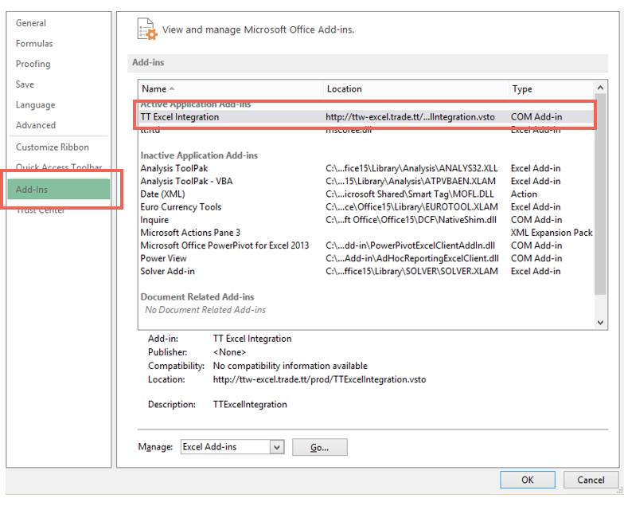
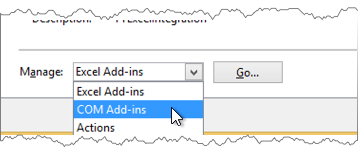
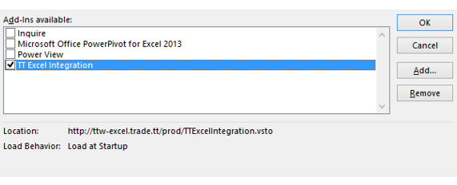
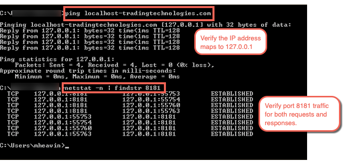
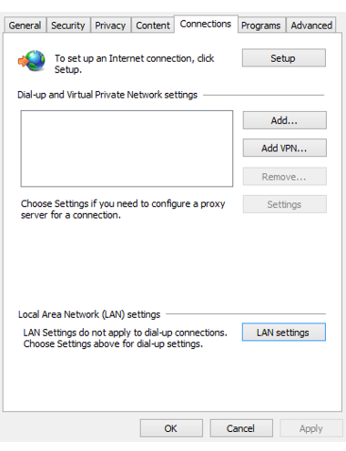
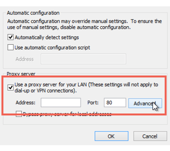
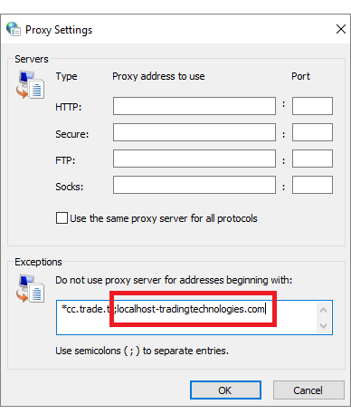

To use Excel integration in TT, the client workstation requires DNS access to localhost-tradingtechnologies.com on port 8181. If your corporate network uses a web proxy, you will need to make some additional configuration changes to ensure that communiation between TT or TT Desktop and the Excel COM add-in functions properly.
When using the Excel add-in to communicate with TT, a secure websocket application is launched local on the workstation that uses TLS certificates for a secure websocket. The TCP/IP communication runs via the workstation's loopback ip address of 127.0.0.1. The localhost-tradingtechnologies.com URL resolves to 127.0.0.1. TT Manages the TLS certificate however it is client’s responsibility to ensure this traffic stays local to the workstation so it is required that localhost-tradingtechnologies.com be excluded from web proxies.
By default, the Excel add-in is automatically enabled during installation. If, for some reason, the add-in is later disabled, the TT platform will be unable to communicate with Excel.
To verify or re-enable the Excel add-in:



To verify that the loopback address resolves to 127.0.0.1 and is connecting through port 8181, enter the following commands is a Windows Command Prompt window:
You should see multiple instances of 127.0.0.1:8181 request/response pairs.

To add localhost-tradingtechnologies.com to the web proxy bypass:



Note: If, in your troubleshooting, you happen to see traffic on TCP Port 8181 on your web-proxy via tcpdump (packet capture); you will have not yet successfully implemented the web-proxy bypass. Please re-check your .pac file to be sure the “localhost-tradingtechnologies.com” web-proxy bypass statement is correctly added and loaded on the trader workstation.